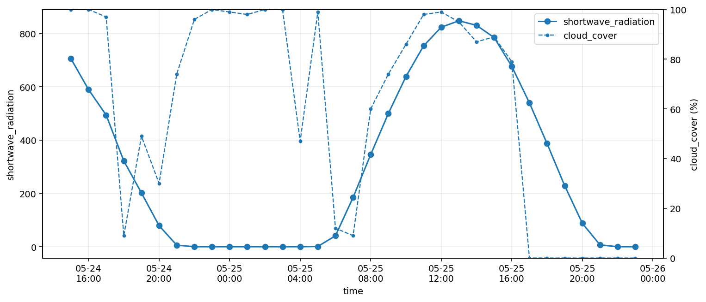
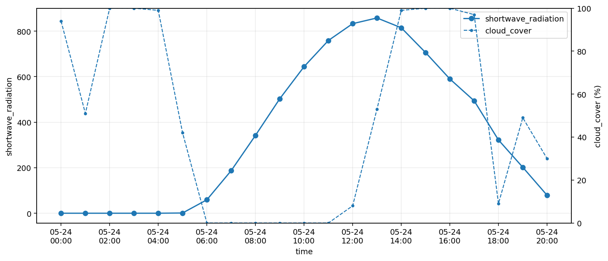

20_40_meteo_forecast
Prognoza pogody i promieniowania Open-Meteo
Godzinowa prognoza wykorzystywana przez logikę PV i automatyki energii.
Raport generowany centralnym generatorem WWW na podstawie danych i rysunków przygotowanych przez moduł forecast_open_meteo.
Prognoza 48 godzin
Rysunek pokazuje najbliższe 48 pełnych godzin prognozy.
W pliku html_texts można ręcznie rozbudować opis i interpretację bez zmiany kodu.

Dzisiaj od rana do zachodu słońca
Rysunek pokazuje dzisiejszy przebieg prognozy od poranka do zachodu słońca.
Zakres kończy się na dzisiejszym zachodzie słońca. Dzięki temu wykres jest prosty i czytelny dla operacyjnej oceny dnia.
